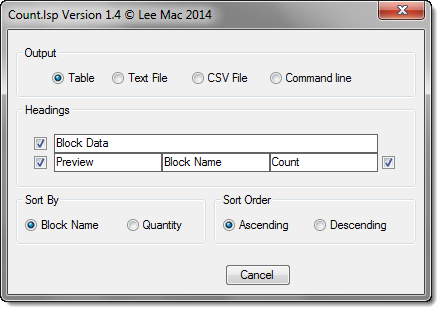

Block Counter
This page is delivered for consistency purposes only, as part of the LeeMac sample module of DynALisp, which shows how DynALisp turns existing AutoLISP programs into a module. The program and its description are the work of Lee Mac, who keeps all the credit for them. The original page, with the latest version, is on Lee Mac's website: https://lee-mac.com/blockcounter.html
See also Dynamic Block Counter & Nested Block Counter.
| Function Syntax | LM-AdvancedBlockCount – original syntax: blkcount / blkcountsettings (see aliases) |
| Current Version | 1.5 |
| Compatible with AutoCAD for Mac? | No |
| Compatible with AutoCAD LT? | No |
| Original Page | lee-mac.com/blockcounter.html |
Program Description
This program enables the user to record the quantities of a selection or all standard or dynamic blocks in the working drawing. The results of the block count may be displayed at the AutoCAD command-line, written to a Text or CSV file, or displayed in an AutoCAD Table, where available.
Upon issuing the command syntax blkcount at the AutoCAD command-line, the user is prompted to make a selection of standard or dynamic blocks to be counted by the program. At this prompt, the user may right-click or press Enter to automatically count all blocks in the drawing.
Depending on the output setting, the results may then be printed to the AutoCAD command-line and displayed in the Text Window, or the user will be prompted to specify an insertion point for the table, or a filename & location for the Text or CSV output file.
The program settings may be configured using the blkcountsettings command; this command will present the user with a dialog interface through which the data output, table & file headings, displayed columns, sorting field & sort order may each be altered.
Count Settings

Example of Usage
See also Dynamic Block Counter & Nested Block Counter.
Bundled program notes
;;--------------=={ Count.lsp - Advanced Block Counter }==--------------;;
;; ;;
;; This program enables the user to record the quantities of a ;;
;; selection or all standard or dynamic blocks in the working drawing. ;;
;; The results of the block count may be displayed at the AutoCAD ;;
;; command-line, written to a Text or CSV file, or displayed in an ;;
;; AutoCAD Table, where available. ;;
;; ;;
;; Upon issuing the command syntax 'count' at the AutoCAD ;;
;; command-line, the user is prompted to make a selection of standard ;;
;; or dynamic blocks to be counted by the program. At this prompt, ;;
;; the user may right-click or press 'Enter' to automatically count ;;
;; all blocks in the drawing. ;;
;; ;;
;; Depending on the output setting, the results may then be printed ;;
;; to the AutoCAD command-line and displayed in the Text Window, or ;;
;; the user will be prompted to specify an insertion point for the ;;
;; table, or a filename & location for the Text or CSV output file. ;;
;; ;;
;; The program settings may be configured using the 'countsettings' ;;
;; command; this command will present the user with a dialog interface ;;
;; through which the data output, table & file headings, displayed ;;
;; columns, sorting field & sort order may each be altered. ;;
;;----------------------------------------------------------------------;;
;; Author: Lee Mac, Copyright © 2014 - www.lee-mac.com ;;
;;----------------------------------------------------------------------;;
;; Version 1.0 - 2010-06-05 ;;
;; ;;
;; - First release. ;;
;;----------------------------------------------------------------------;;
;; Version 1.1 - 2010-06-06 ;;
;; ;;
;; - Updated code to include Settings dialog. ;;
;; - Added Undo Marks. ;;
;;----------------------------------------------------------------------;;
;; Version 1.2 - 2010-06-06 ;;
;; ;;
;; - Fixed bug with 64-bit systems. ;;
;;----------------------------------------------------------------------;;
;; Version 1.3 - 2011-03-02 ;;
;; ;;
;; - Program completely rewritten. ;;
;; - Updated code to work without error on 64-bit systems by fixing ;;
;; bug with ObjectID subfunction - my thanks go to member 'Jeff M' ;;
;; at theSwamp.org forums for helping me solve this problem. ;;
;; - Added ability to write block count to Text/CSV Files. ;;
;;----------------------------------------------------------------------;;
;; Version 1.4 - 2014-06-15 ;;
;; ;;
;; - Program completely rewritten. ;;
;;----------------------------------------------------------------------;;
;; Version 1.5 - 2015-06-07 ;;
;; ;;
;; - Minor update to enable full compatibility with ZWCAD. ;;
;; (regeneratetablesuppressed property not available) ;;
;;----------------------------------------------------------------------;;
Command Names And Aliases
As in every DynALisp module, each program of this sample module has one main command, named LM-*, and the original command names of Lee Mac's page are kept as its aliases: they run the same command, and can be added, renamed or removed in Dyl-Suite (saved in Resources\Aliases.csv). The rows marked ↳ are child commands of LM-AdvancedBlockCount: they are run by their alias, or picked from LM-AdvancedBlockCount when it lists them (their command is named Pst-*).
| Command | Aliases | Name |
|---|---|---|
| LM-AdvancedBlockCount | BLKCOUNT | Advanced Block Count |
| ↳ BLKCOUNTSETTINGS | – | Advanced Block Count Settings |